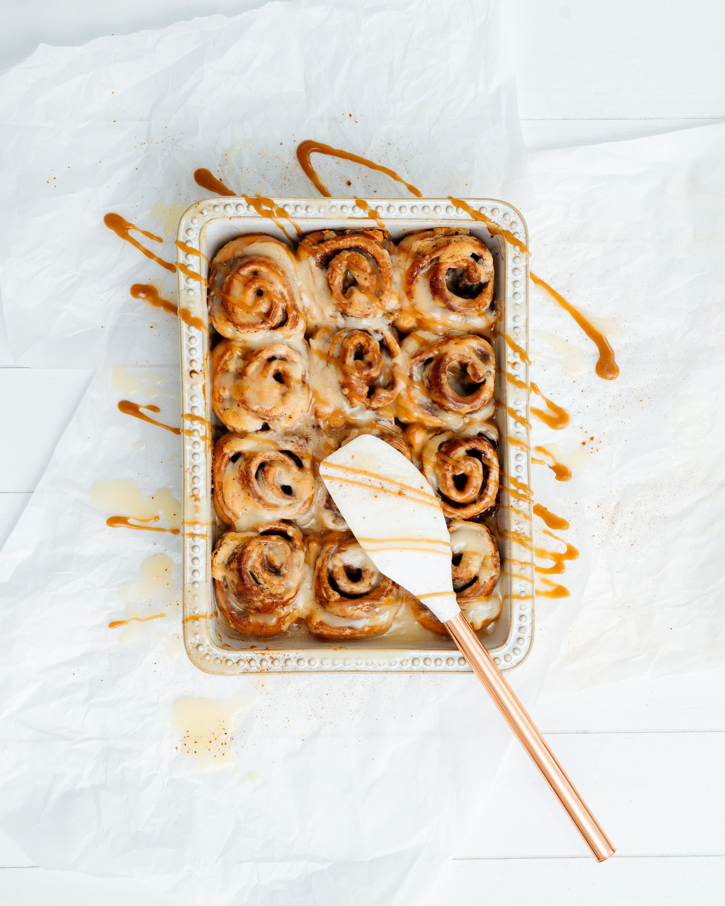

Ooey Gooey Cinnamon Rolls
Home

Description
These ooey gooey Hawaiian roll cinnamon rolls have a buttery sweet cinnamon layer in the
middle,
and a sweet icing glaze on top after baking.
The best part is that you didn't need a day and night to make them!
Ingredients
- 2/3 cup brown sugar
- 2 teaspoons ground cinnamon
- 10 tablespoons butter, softened, divided
- 1 (12 count package) Hawaiian rolls
- 4 ounces of cream cheese
- 1 teaspoon vanilla extract
- 1 cup confectioners sugar
Directions
- Preheat the oven to 350 degrees F (180 degrees C). Lightly grease a 9x13-inch
baking dish. Slice rolls in half horizontally, keeping tops and bottoms connected.
- Stir together brown sugar, cinnamon, 8 tablespoons butter, and 1/8 teaspoon
salt in a small bowl until well combined and set aside. Spread bottom half
of buns with 3/4 of butter mixture and place top halves on top. Place rolls
in the prepared baking dish; spread butter mixture on top.
- Bake in the preheated oven for 20 minutes. Let stand for 5 minutes before icing.
- Meanwhile, beat remaining 2 tablespoons butter with cream cheese, remaining salt,
vanilla, and confectioner's sugar with an electric mixer until smooth.
Spread icing over warm rolls.